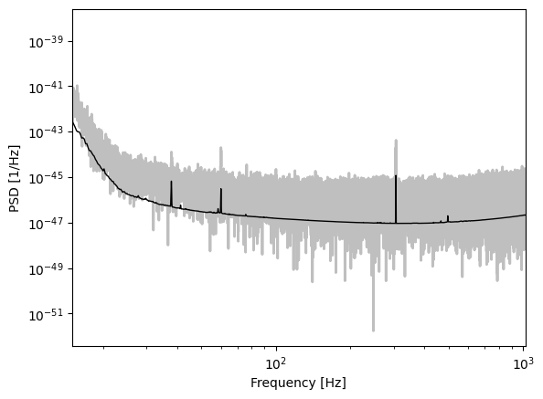
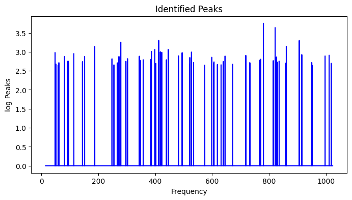
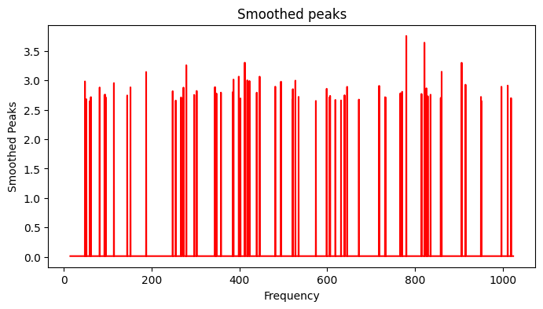
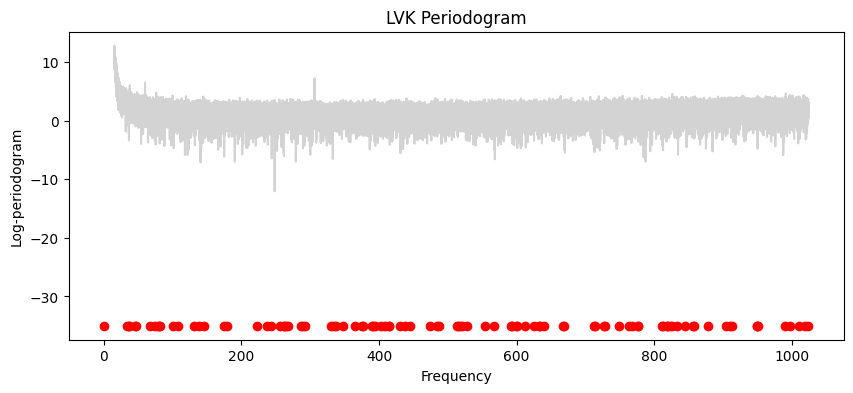
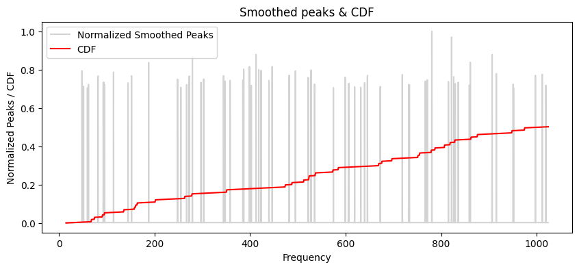

!

LVK Demo#
from scipy.signal import freqs
! pip install logPsplinePSD -q
Simulated LVK data#

Knot allocation#
# knot allocation
import numpy as np
import pandas as pd
from scipy.interpolate import interp1d
def extract_peaks(vec, window=9, threshold_factor=1.0):
"""
vec: array-like, the periodogram in original scale
returns: array with log-peaks, otherwise 0
"""
vec = np.asarray(vec)
n = len(vec)
# Rolling median (window size 9, centered)
med_psd = (
pd.Series(vec)
.rolling(window=window, center=True, min_periods=1)
.median()
.to_numpy()
)
# Power ratio
ratio_med = vec / (med_psd + np.finfo(float).eps)
log_ratio_med = np.log(ratio_med)
# Replace NaNs with mean
mean_lr = np.nanmean(log_ratio_med)
log_ratio_med = np.where(np.isnan(log_ratio_med), mean_lr, log_ratio_med)
# Threshold = Q3 + 1.5 * (Q3 - Q1)
Q1 = np.nanquantile(log_ratio_med, 0.25)
Q3 = np.nanquantile(log_ratio_med, 0.75)
threshold = (Q3 + 1.5 * (Q3 - Q1)) * threshold_factor
# Find values greater than threshold
out = np.zeros(n)
out[log_ratio_med > threshold] = log_ratio_med[log_ratio_med > threshold]
return out
from scipy.signal.windows import gaussian
def smooth_peaks(vec, d):
"""
Returns the smoothed vector with peaks.
Parameters
----------
vec : array-like, Vector with peaks.
d : int, Propagation distance to the left and right.
"""
vec = np.asarray(vec)
out = vec.copy()
n = len(vec)
# Gaussian decay (like gsignal::gausswin in R)
gauss_win = gaussian(2 * d, std=2.5)
dec = gauss_win[:d][::-1] # take first d and reverse
for i in range(1, d + 1):
# propagate to the left
aux1 = np.concatenate([vec[i:], np.zeros(i)])
# propagate to the right
aux2 = np.concatenate([np.zeros(i), vec[: n - i]])
# apply Gaussian decay
aux1 = aux1 * dec[i - 1]
aux2 = aux2 * dec[i - 1]
# update with maximum
out = np.maximum(out, aux1)
out = np.maximum(out, aux2)
# Areas between peaks: aassign
m0 = np.sum(out) * 0.05 # 5 percent of total peaks
n0 = np.count_nonzero(out) # number of non-zeros
if n0 > 0:
min_value = m0 / n0
out[out <= min_value] = min_value
return out
def knotLoc(vec, k, degree, eqSpaced=False):
"""
Compute knot locations for B-spline densities.
Parameters
----------
vec : array-like, Numeric vector containing the smoothed peaks.
k : int, Number of B-spline densities.
degree : int
Degree of the B-spline densities.
eqSpaced : bool, optional (default=False)
If True, returns equidistant knots in [0,1].
Returns
-------
knots : ndarray
Knot positions in [0,1].
"""
K = k - degree + 1 # number of internal knots in [0,1]
vec = np.asarray(vec)
if eqSpaced:
knots = np.linspace(0, 1, K)
return knots
N = len(vec)
# Normalized density
dens = vec / np.sum(vec)
cumf = np.cumsum(dens)
# Distribution function (maps [0,1] -> [0,1])
df = interp1d(
np.linspace(0, 1, N),
cumf,
kind="linear",
bounds_error=False,
fill_value=(0, 1),
)
# Inverse distribution function
grid = np.linspace(0, 1, N)
dfvec = df(grid)
invDf = interp1d(
dfvec, grid, kind="linear", bounds_error=False, fill_value=np.nan
)
# Internal points (exclude 0 and 1)
v = np.linspace(0, 1, K)
v = v[1:-1]
knots = np.concatenate(([0], invDf(v), [1]))
return knots
lvk_std = np.std(lvk_noise.y)
noise_standardised = (lvk_noise.y - np.mean(lvk_noise.y)) / lvk_std
freqs = np.fft.rfftfreq(lvk_noise.n, 1 / lvk_noise.fs)
pdgrm = Periodogram(
freqs=freqs, power=np.abs(np.fft.rfft(noise_standardised)) ** 2
)
pdgrm = pdgrm.cut(FMIN, FMAX)
plt.loglog(pdgrm.freqs, pdgrm.power, color="gray", alpha=0.5)
[<matplotlib.lines.Line2D at 0x7fa503910f40>]
import matplotlib.pyplot as plt
from scipy.interpolate import interp1d
# 1. Identifying peaks
aux = extract_peaks(pdgrm.power, window=9, threshold_factor=1.0)
# 2. Smoothed peaks
r = smooth_peaks(aux, 40)
# 3. Plot identified peaks
plt.figure(figsize=(8, 4))
plt.plot(pdgrm.freqs, aux, linestyle="-", color="blue")
plt.title("Identified Peaks")
plt.xlabel("Frequency")
plt.ylabel("log Peaks")
plt.show()
# 4. Plot areas to allocate knots (smoothed peaks)
plt.figure(figsize=(8, 4))
plt.plot(pdgrm.freqs, r, linestyle="-", color="red")
plt.title("Smoothed peaks")
plt.xlabel("Frequency")
plt.ylabel("Smoothed Peaks")
plt.show()
#####################
### Ploting Knots ###
#####################
# 1. Compute knots
k = knotLoc(vec=r, k=100, degree=3)
maxFreq = np.max(pdgrm.freqs) # Maximum frequency
# 2. Plot LVK periodogram
plt.figure(figsize=(10, 4))
plt.plot(pdgrm.freqs, np.log(pdgrm.power), linestyle="-", color="lightgray")
plt.title("LVK Periodogram")
plt.xlabel("Frequency")
plt.ylabel("Log-periodogram")
# Red points: knot locations
plt.scatter(k * maxFreq, np.full_like(k, -35), color="red", label="Knots")
# 3. Distribution function from smoothed peaks
N = len(r)
dens = r / np.sum(r)
cumf = np.cumsum(dens)
# Interpolation function (distribution function)
df = interp1d(
np.linspace(0, 1, N),
cumf,
kind="linear",
bounds_error=False,
fill_value=(0, 1),
)
# 4. Plot areas to allocate knots
plt.figure(figsize=(10, 4))
plt.plot(
pdgrm.freqs,
r / np.max(r),
linestyle="-",
color="lightgray",
label="Normalized Smoothed Peaks",
)
# Add cumulative distribution (red line)
plt.plot(
pdgrm.freqs,
df(np.array(pdgrm.freqs) / 2048),
color="red",
label="CDF",
)
plt.title("Smoothed peaks & CDF")
plt.xlabel("Frequency")
plt.ylabel("Normalized Peaks / CDF")
plt.legend()
plt.show()




from log_psplines.mcmc import run_mcmc
# Run MCMC
mcmc_results = run_mcmc(
pdgrm,
n_warmup=1000,
n_samples=2000,
knot_kwargs=dict(knots=k * maxFreq, degree=3),
verbose=True,
)
NUTS sampler [cpu] [ 0 42]
sample: 100%|██████████| 3000/3000 [00:56<00:00, 52.80it/s, 15 steps of size 3.58e-01. acc. prob=0.90]
Sampling completed in 58.09 seconds
ESS min: 2008.0, max: 4957.8
Runtime: 58.09 sec
# Plot results
from log_psplines.plotting import plot_pdgrm
plot_pdgrm(idata=mcmc_results, interactive=True)
# This is the current saved LVK knot allocation method in logPsplinePSD
mcmc_results_v2 = run_mcmc(
pdgrm,
n_warmup=1000,
n_samples=2000,
knot_kwargs=dict(degree=3, method="lvk"),
verbose=True,
)
Found 220 spectral line regions using threshold = 8.36
Adaptive binning (d=25): 9 peak regions, 10 zero regions
Generated 119 adaptive knots (15.0-1024.0 Hz)
NUTS sampler [cpu] [ 0 42]
sample: 100%|██████████| 3000/3000 [02:01<00:00, 24.62it/s, 15 steps of size 3.44e-01. acc. prob=0.88]
Sampling completed in 122.49 seconds
ESS min: 1285.8, max: 4302.8
Runtime: 122.49 sec
from log_psplines.plotting import plot_pdgrm
plot_pdgrm(idata=mcmc_results_v2, interactive=True)
GW1500914#
# TODO